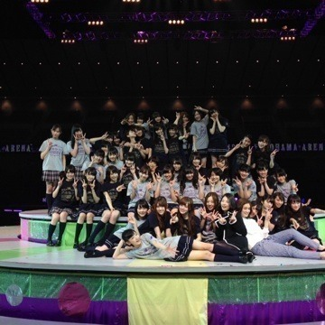

| 2014/02 23 Sun | 難関は休憩中。549回目 |
乃木坂46 2歳おめでたい！
バースデーライブが終了しました。
1st〜7thまでの歴史の振り返り。
VTRで何度も泣きそうになりました。
オリジナルメンバーで
全曲披露ということで
みなさんも嬉しかったと思う！
狼に口笛を
センターステージを使って
360度回りながら踊り
音が出ないギター
強風に当たりながら歌ったり
他の星から
自分がスクリーンに映ったり
踊ってはないけど、
マネキンのオープニングのレーザーが
めっちゃかっこよかったり
センターステージは
デコレーションケーキになったり
回ったりといろんな仕掛けがあって
代々木のように外周もあったので
みなさんと近くまで行けてよかった。
団扇もタオルもたくさん見つけたよー
最後にゆみ姉もせっちゃんも
来てくれて一緒に歌って。
内容が濃すぎて全部話すの大変。
みなさん、長時間お疲れ様でした。
休憩中には個人pvの歌VTRが
流れたのですが、サプライズで
実際歌わせてもらいました。
やると決まった時は
嬉しかったのですが、
当日が近づくに連れて
めちゃくちゃ怖くなってきて...
不安だらけでした。
休憩中だしメンバーもいないし...
休憩中とはいえ、
横浜アリーナという素晴らしい舞台に
一人で立てたことは凄く大きいこと。
登場して歌った時
予想以上に歓声が大きかったです。
休憩中にも関わらず
一緒に歌ってくれて
とても暖かく迎えてくれて
まりっか'17が私とって
どれだけ大きなものであるか
改めて感じました。
終わった後全力で逃げたけどね、
これがなかったら
私はどうなってたんだろう。
18歳の初まりにこのような
とても貴重な体験ができました。
良いスタートがきれて幸せ！

だいすきな苺タルトだったああああん
ななみおめでとうー
オープニングMCで
大勢の人にお祝いしてもらえて
幸せだったー
2月20日生まれの特権！
スタッフのみなさん
本当にありがとうございました。
お疲れ様でした。
勢いそのままに！
次の大イベントは
16人のプリンシパル3だーーー！
大変だーーーーー！

3年目も乃木坂46を
よろしくお願いします。
まりか
コメント(903)
2014/02/23 12:30